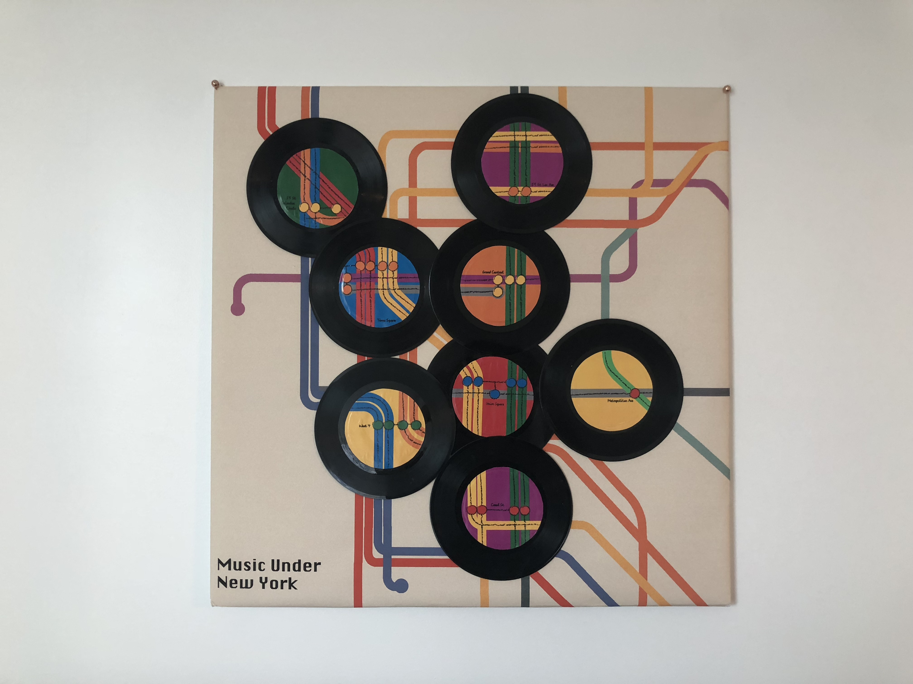
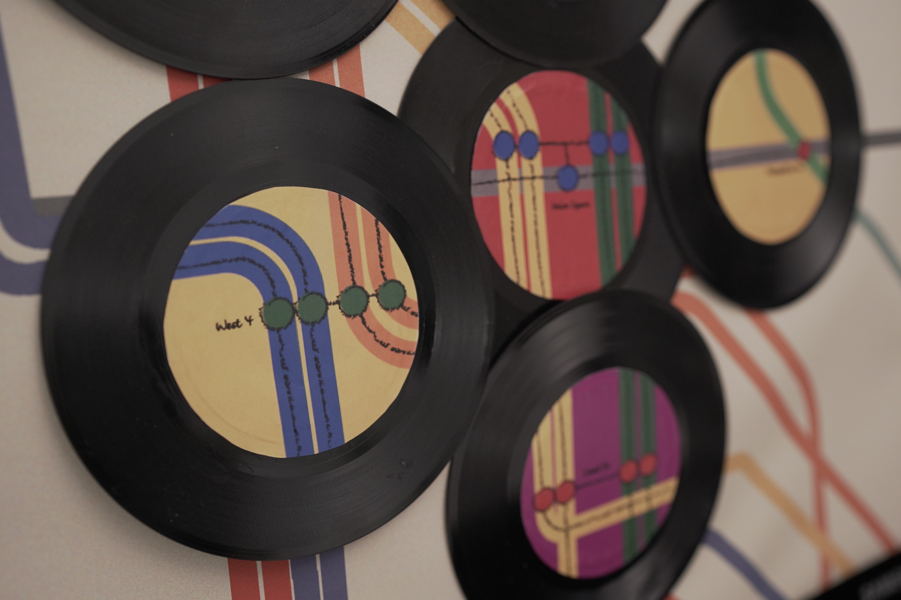
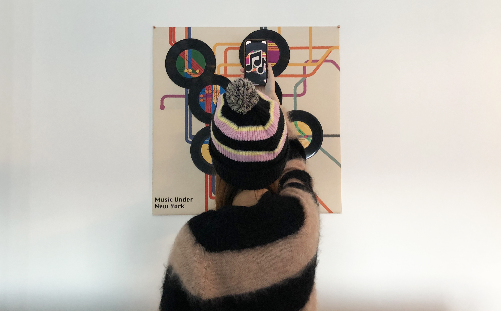

2018 | Argumented Reality
Music Under New York is an interactive augmented reality installation that showcases the music which lives under New York. It’s an engaging experience for audiences from anywhere to enjoy the visualization of the New York Subway and have a chance to listen to its busking music. It’s a dialogue among image, music and people: audiences use a customer-made iPhone, scanning and decoding the graphics on the installation, in order to gain the sound data and hear the music.



>> More Detail about the project.